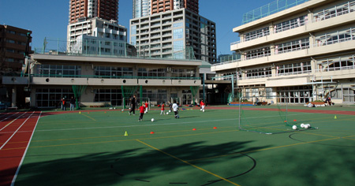

Nanzan Elementary School, Roppongi/Azabu Juban, Minato-ku.
Nanzan Elementary School sits in the heart of Tokyo, just minutes on foot from the illustrious Roppongi Hills and is easily accessible from the Azabu Juban, Moto Azabu and Hiroo areas - all of which are popular residential areas of Tokyo's thriving expatriate community.

British Football Academy sessions at the school will take place on a safety-approved, rubberized playground and as such all children are asked to wear flat-soled trainers (sneakers) for their own safety (football boots (cleats) with molded or screw-in studs will not be permitted on this surface). As with all of our locations shin pads must be worn by all children participating in BFA coaching sessions. In the event of inclement weather, sessions will be cancelled as the surface is too slippery. BFA children are asked to wear the official Academy uniform during all sessions, so they will be easily recognizable to BFA coaches.
|
CLASSES AT THIS LOCATION
|
|
 PUPS PUPS
1:00~1:30pm
|
 BULLDOGS BULLDOGS
1:30~2:20pm
|
 LIONS LIONS
2:30~3:30pm
|
 ACADEMY ACADEMY
3:40~5:00pm
|
Rain Plan
In the event of inclement weather, sessions cannot be held on the field as it gets too slippery and dangerous for the children to play. In this case Pups, Bulldogs & Lions sessions will be held in the gym at Kogai Elementary School (IF it is available), with the classes being tailored to suit the smaller space. Please see rain plan rules regarding footware etc given to you with your members guide. Unfortunately the Academy class must be cancelled as the space is too small for the older children, they will however be offered the chance to have a make-up game at Ohashi Junction. Where possible, we will inform you by 12 noon on the day via email and our facebook page.
Unfortunately parking is not available at the school, so parents bringing their children by car are asked to park in the nearby Roppongi Hills complex.
GETTING THERE
By Train:
Take either the Oedo or Namboku subway line to Azabu Juban station. Walk up Azabu Juban high street almost all the way to Roppongi Hills. Just before the high street joins the major road (leading to Roppongi tunnel), there's a small road on the left that rises sharply around a corner. Nanzan Elementary School is located 100 meters along this road on the left-hand side, opposite Roppongi High School.
By Car:
Head for Roppongi Hills and park in the public car park - there is very little parking to be found around the school.
For a larger printable map, click here.
|


{kind=link}